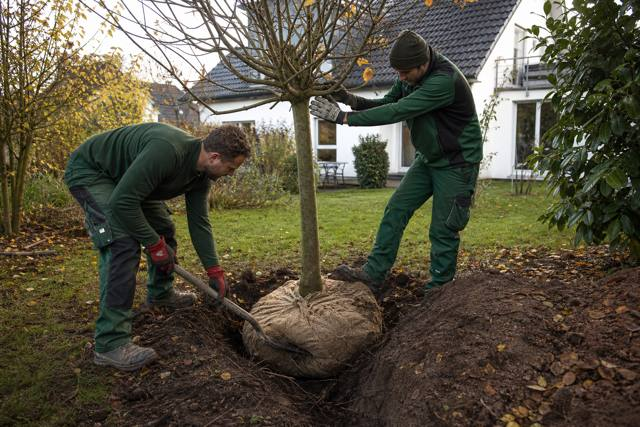

Ausgabe 10/2025: Herbst ist Planungszeit
Die Saison läuft aus, die nächste beginnt am Schreibtisch. Wer im Oktober weiß, welche Positionen er zum Saisonstart besetzen muss, hat noch die Wahl; wer im März sucht, nimmt, was übrig ist. Diese Ausgabe ordnet ein, was der Arbeitsmarkt im Winter tatsächlich bewegt, warum Eigenkündigungen heute die Regel sind, was der Baggerschein rechtlich ist – und warum der Oktober der beste Pflanzmonat bleibt.
In dieser Ausgabe
5 Beiträge
623.000 offene Stellen, 2,9 Millionen Arbeitslose: Was der Oktober für die Winterplanung bedeutet
Die Bundesagentur meldet für Oktober 2025 einen stabilen Arbeitsmarkt. Für GaLaBau-Betriebe beginnt jetzt das Zeitfenster, in dem sich Fachkräfte am ehesten bewegen – und in dem die wenigsten Betriebe suchen.

Herbstpflanzung: Warum Oktober der beste Monat für Gehölze ist – und was dabei schiefgeht
Warmer Boden, kühle Luft, Regen in Sicht: Der Herbst gibt Gehölzen einen Vorsprung, den das Frühjahr nicht bietet. Worauf es bei wurzelnackter Ware, Ballen und Containern ankommt und welche Arten trotzdem warten sollten.

Azubi-Mindestvergütung 2026: 724 Euro – und warum der GaLaBau davon weit entfernt ist
Das Bundesbildungsministerium hat die Mindestausbildungsvergütung für 2026 bekannt gegeben. Für Betriebe im Tarif spielt sie keine Rolle, für nicht tarifgebundene Betriebe gilt eine andere Grenze – und die liegt deutlich höher.

Jede zweite Kündigung kommt vom Mitarbeiter – und die meisten haben den nächsten Job schon
Der Anteil der Eigenkündigungen ist seit 2009 von 34 auf 52 Prozent gestiegen. Wer geht, geht selten ins Nichts: 84 Prozent haben eine neue Stelle in Aussicht. Was das für die Mitarbeiterbindung im GaLaBau heißt.

Baggerschein: Was der DGUV Grundsatz 301-005 von Betrieben verlangt – und was nicht
Einen amtlichen Baggerführerschein gibt es nicht. Trotzdem darf niemand ohne Qualifizierung und Beauftragung auf den Sitz. Was der Grundsatz der Unfallversicherer vorschreibt, wer ausbilden darf und was auf der Straße zusätzlich gilt.